Physics
CURRENT ELECTRICITY
Net charge crossing a cross-section with a chosen forward direction; steady vs
instantaneous current
CURRENT: DEFINITION AND SIGN
📖Definition & Introduction
- Electric current through a cross-section is the rate of net charge transported across it.
- Choose a reference forward direction normal to the cross-section; current sign is with respect to this choice.
- Let q+ = net positive charge crossing forward in time t (forward − backward).
- Let q− = net negative charge crossing forward in time t (forward − backward).
- Net charge transported forward: q = q+ − q−; negative charges moving forward reduce q.
- If computed I is negative, the actual current is opposite to the chosen forward direction.
2 Diagram
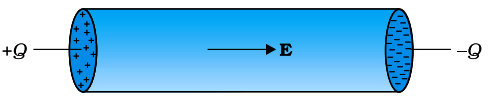
Net transported charge uses forward direction; negative charge moving forward
contributes negative to q.
🎯Key Concepts
- 🧭Direction is a convention: pick “forward”; the sign of I tells actual direction.
- ➕q+ counts net forward flow of positive charge; backward flow is subtracted.
- ➖q− counts net forward flow of negative charge; it enters with a minus in q.
- ⏱️Steady current uses I = q/t; time-varying current uses I(t) = dQ/dt.
- 📌For constant current, Q(t) is linear in time; slope equals I.
🔎SIGN CONVENTION: WHAT COUNTS AS “NET CHARGE TRANSPORTED”
- Compute separately: q+ = (positive forward) − (positive backward).
- Similarly: q− = (negative forward) − (negative backward).
- Then q = q+ − q− gives the net charge transported in the forward sense.
- If electrons (negative) drift forward, q becomes negative → current is backward (conventional current).
⚙️STEADY VS INSTANTANEOUS CURRENT
- Steady: net charge crossing is proportional to time; I is constant at the cross-section.
- Non-steady: define I(t) using a very small interval around t.
- Eq. I = q/t is a special case of I(t) = dQ/dt when I does not change with time.
⚖️Steady current vs Instantaneous current
| Basis | Steady current | Instantaneous current |
|---|---|---|
| Definition | I = qt (constant ratio) | I(t) = limΔt→0 ΔQΔt |
| Time dependence | I is constant at a cross-section | I may vary with time |
| Q vs t | Straight line; slope = I | Slope changes with t |
| Use in problems | Battery + resistor circuits (after transients) | AC / pulses / charging and discharging |
🧮Formulas
Start with a chosen forward direction across a fixed cross-section.
q = q+ − q−
For steady flow, net transported charge is proportional to time.
I = qt
For general (possibly time-varying) flow, use a shrinking time interval.
I(t) ≡ limΔt→0 ΔQΔt = dQdt
| q+ = | Net positive charge crossing forward in time t (C) |
| q− = | Net negative charge crossing forward in time t (C) |
| q, Q = | Net charge transported in the chosen forward sense (C) |
| I = | Current with sign relative to chosen forward direction (A) |
| t, Δt = | Time interval (s) |
Core definition with sign
I(t) = dQdt (sign from chosen forward
direction)
⭐Important Points
- q+ and q− are net forward charges: (forward − backward) separately for each sign.
- Net transported charge forward: q = q+ − q−; this embeds the sign convention.
- I = q/t is valid only when current is steady (time-independent at that cross-section).
- General definition: I(t) = limΔt→0 (ΔQ/Δt) = dQ/dt.
- If I is negative, do not change magnitude; report direction as opposite to chosen forward direction.
💡Memory Technique
““Plus helps, Minus melts” (in forward sense)”
🧮Formula Sheet
q = q+ − q−I = qt (steady
current)I(t) = limΔt→0 ΔQΔt = dQdt (general)1
A = 1 C s−1Sign rule: I > 0 ⇒ along chosen forward;
I < 0 ⇒ opposite direction
How an applied electric field makes charges drift: conductors vs insulators, and who
carries current
CONDUCTION IN MATERIALS
📖Definition & Introduction
- Electric conduction is the flow of mobile charge carriers under an applied electric field E.
- An electric field exerts force on charges; if charges are free to move, their motion gives current.
- In solids, many charges are bound; conduction occurs only if some carriers are mobile inside the material.
- In metals, electrons are mobile while positive ion cores are fixed in a lattice.
- With no applied field, thermal motion is random, so net current is zero despite rapid motion.
🖼️Diagram
In metals, fixed positive ions form the lattice; applied E biases electron
motion into a small drift (opposite to E).
🎯Key Concepts
- ➡️Field → force on charge; free carriers acquire a small drift superposed on random motion.
- 🧱Insulator: electrons tightly bound; conduction is extremely small under ordinary fields (except at breakdown).
- 🔩Metal: many electrons are effectively free; ions remain fixed → electron-current dominates.
- 🧪Electrolyte: both cations and anions move and carry current through solution.
- 🌫️Ionised gas: electrons + positive ions act as carriers; conduction needs ionisation.
- 🔋A steady current needs a source to maintain a steady internal field; otherwise only a transient current flows as charges neutralise the field-producing separation.
🔎WHY ELECTRIC FIELD PRODUCES CURRENT (SOLID CONDUCTOR)
- Field exerts force on each electron; between collisions it accelerates, but collisions randomise direction.
- Random thermal motion alone gives equal forward/backward crossings → net current zero.
- With E, a slight bias develops: average (drift) velocity is opposite to E for electrons.
- Collisions prevent indefinite speed-up, so drift becomes steady while heating the lattice.
⚙️STEADY vs TRANSIENT CURRENT (NEED FOR A SOURCE)
- If only end charges create the field, electrons move and neutralise them → internal field vanishes → current stops.
- A cell/battery continually separates charges, maintaining a steady field inside the conductor for steady current.
- Circuit responds quickly because the field establishes rapidly; electrons drift locally everywhere.
⚖️CONDUCTORS vs INSULATORS vs ELECTROLYTES (CHARGE CARRIERS)
| Basis | Metal (solid conductor) | Insulator | Electrolytic solution |
|---|---|---|---|
| Mobile carriers | Electrons | Nearly none (charges bound) | Cations + anions |
| Fixed background | Positive ion cores fixed in lattice | Atoms/molecules with bound electrons | Neutral solvent molecules (bulk) |
| Response to applied E | Drift of electrons gives current | Very small conduction under ordinary fields (until breakdown) | Both ion types drift and carry current |
| Direction note | Electron drift opposite to E; conventional current along E | No meaningful drift current (in normal conditions) | Positive ions along E, negative ions opposite to E |
⭐Important Points
- Conduction needs mobile charges; field alone is not enough if charges are bound.
- In metals: electrons move; positive ions are fixed and mainly cause collisions (resistance).
- Without field: random thermal motion gives zero net current at any cross-section.
- With field: electrons drift opposite to E; conventional current is along E.
- Steady current requires maintaining the field using a source; otherwise current is only transient.
💡Memory Technique
“Mnemonic: "M–E–G" for carriers (Metal–Electrolyte–Gas)”
📌Quick Recap
Current needs mobile charge carriers and an applied electric field
in the material.Metals: electrons are the main mobile carriers;
positive ions form a fixed lattice.Insulators: charges exist but are
bound; conduction is extremely small under ordinary fields.Electrolytes: current carried by cations and anions moving in opposite
directions.No electric field: random thermal motion gives net current =
0 on average.Without a source maintaining charge separation, the
internal field disappears and current becomes transient.
Microscopic picture: random thermal motion gives zero current; electric field creates
tiny steady drift limited by collisions
DRIFT AND RELAXATION TIME
📖Definition & Introduction
- Drift velocity vd is the average (vector) velocity of charge carriers in an applied electric field.
- Without field, electrons have rapid thermal motion with random directions ⇒ average (vector) velocity = 0 ⇒ net current = 0.
- With field E, an electron accelerates between collisions, but collisions randomise direction repeatedly, preventing runaway increase of average velocity.
- Relaxation time τ is the average time between successive collisions of a free electron with the lattice/ions.
- A steady current needs a sustained electric field maintained by a source (cell/battery); otherwise the field collapses after a short transient.
2 Diagram
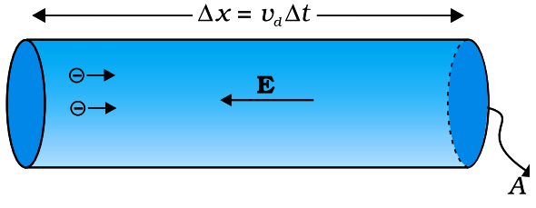
Charge-carrier motion: random segments between collisions + tiny net drift
(electrons drift opposite to E; positive carriers drift along E).
🎯Key Concepts
- 🎲Thermal motion is fast but random ⇒ no preferred direction ⇒ no net current.
- 🧲Electron acceleration in a uniform field: a = −(e/m)E (opposite to E).
- 💥Collisions randomise velocity; motion becomes many short segments with a slight bias due to E.
- ⏱️τ controls drift buildup between collisions; larger τ ⇒ larger |vd| (for fixed E).
- ➡️Actual motion = large random velocity + small drift; drift is typically very small (often mm/s for ampere currents in metals).
🔎MICROSCOPIC STORY: FROM RANDOM TO DRIFT
- No E: electrons move equally in all directions ⇒ average (vector) velocity is zero ⇒ net current is zero.
- Apply E: each electron accelerates for a random time between collisions, then collisions randomise its velocity again.
- After many collisions, the average velocity becomes constant in time ⇒ steady drift, not indefinite acceleration.
- Steady current persists only while a source maintains a steady E inside the conductor.
⚙️TRANSIENT VS STEADY CURRENT (WHY A SOURCE IS NEEDED)
- End charges can create an internal E only temporarily; drifting electrons neutralise them.
- As end charges cancel, E → 0 ⇒ vd → 0 ⇒ current stops (transient).
- A cell/battery continuously separates charges to keep E roughly constant ⇒ steady current.
⚖️THERMAL MOTION vs DRIFT MOTION
| Basis | Thermal (no field) | Drift (with field) |
|---|---|---|
| Cause | Thermal energy | Electric field + collisions |
| Direction preference | None (random) | Small bias set by sign of carrier (electrons opposite to E) |
| Average velocity | 0 (vector average) | For electrons: vd = −(eτ/m)E; for + carriers: along E |
| Path picture | Random straight segments between collisions | Segments with slight net shift (drift) |
| Net current | 0 | Nonzero (steady if E is maintained) |
🧮Formulas
Electron acceleration in a uniform field
a = −emE
If time since last collision is ti, velocity becomes
Vi = vi − emEti
Average over many electrons: ⟨vi⟩ = 0 and ⟨ti⟩ =
τ
vd = ⟨Vi⟩ = −eτmE
Current due to drift through area A (magnitude)
I = neA|vd|
| vd = | drift velocity of electrons (m s−1) |
| τ = | relaxation time = mean time between collisions (s) |
| E = | electric field in conductor (V m−1) |
| n = | number density of free electrons (m−3) |
| e = | magnitude of electron charge (1.6 × 10−19 C) |
| m = | electron mass (9.11 × 10−31 kg) |
| A = | cross-sectional area (m2) |
Most important result (direction included for electrons)
vd = −eτmE
⭐Important Points
- Random thermal speeds are large, but their vector average is zero ⇒ no current without an external field.
- Electrons drift opposite to E; conventional current direction is along E in a metal.
- τ is a mean time; individual collision times vary randomly.
- Steady drift arises from repeated acceleration between collisions plus randomisation at collisions.
- If the source is removed, internal E collapses quickly ⇒ current becomes transient and dies.
💡Memory Technique
“DRIFT = "D.R.I.F.T"”
🧮Formula Sheet
Electron acceleration: a = −(e/m)EDrift velocity (electron): vd = −(eτ/m)ECurrent–drift relation (magnitude): I =
neA|vd|Current density (magnitude): j =
ne|vd|Microscopic Ohm’s law (vector): j
= ( ne2τ/m ) EMobility (magnitude):
μ = |vd|/|E| = eτ/m
From V = IR to material property ρ and field form E
= ρj
OHM’S LAW AND RESISTIVITY
📖Definition & Introduction
- Ohm’s law (ohmic conductor, constant temperature): V ∝ I ⇒ V = RI.
- Resistance R is the proportionality constant; SI unit ohm (Ω).
- For a uniform wire: R increases with length l and decreases with area A.
- Resistivity ρ is a material property: R = ρlA; SI unit Ω m.
- Current density j is current per area: j = IA (A m−2).
- Field (microscopic) form for uniform conductor: E = ρj and j = σE, where σ = 1/ρ.
2 Diagram
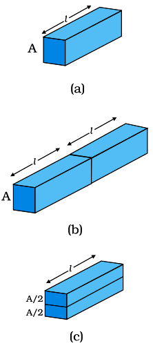
Uniform wire of length l, area A: relate V, I, E,
j, ρ.
🎯Key Concepts
- 📈Ohmic conductor: in a plot of V (y-axis) vs I (x-axis), the graph is a straight line through origin; slope = R.
- 📏Geometry: R ∝ l (series addition idea), R ∝ 1/A (parallel paths idea).
- 🧱ρ depends on material (and temperature), not on dimensions l, A.
- 🧭Uniform wire: E = Vl and j = IA ⇒ E = ρj.
- 🔁Conductivity σ: larger σ ⇒ larger j for the same E; units S m−1.
🔎DERIVING R DEPENDENCE ON l AND A
- Double length: two identical pieces in series ⇒ same I, total V doubles ⇒ R doubles.
- So for fixed material and area: R ∝ l.
- Halve area: cut the slab lengthwise into two equal parts (each has area A/2).
- If both halves are connected in parallel across the same V, the total current splits equally, so each half carries I/2.
- Thus each half has R = V/(I/2) = 2V/I = 2R ⇒ R ∝ 1/A.
⚙️FIELD FORM AND CONDUCTIVITY
- Uniform field inside a wire: V = El (magnitude).
- Current density: j = IA; direction same as conventional current.
- From V = Iρl/A and V = El: E = ρj (vector: E = ρj).
- Define conductivity: σ = 1/ρ ⇒ j = σE.
- Units: ρ in Ω m; σ in S m−1 (since S = Ω−1).
⚖️RESISTANCE vs RESISTIVITY vs CONDUCTIVITY
| Basis | Resistance R | Resistivity ρ | Conductivity σ |
|---|---|---|---|
| Depends on | Material + dimensions (l, A) | Material (and temperature) | Material (and temperature) |
| Definition | R = VI | ρ = RAl | σ = 1ρ |
| SI unit | Ω | Ω m | S m−1 |
| Key relation | V = IR | R = ρl/A | j = σE |
🧮Formulas
Ohm’s law (macroscopic):
V = IR
Length dependence (two identical slabs in series):
Req = 2VI = 2VI = 2R ⇒ R ∝
l
Area dependence (two identical half-slabs in parallel; each branch carries
I/2):
Rhalf = VI/2 = 2VI = 2R ⇒ R ∝ 1A
Combine proportionalities and define resistivity ρ:
R = ρlA
Convert to field form using V = El, j =
I/A:
E = ρj (equivalently j = σE, σ =
1/ρ)
| V = | Potential difference across conductor (V) |
| I = | Current through conductor (A) |
| R = | Resistance (Ω) |
| ρ = | Resistivity of material (Ω m) |
| σ = | Conductivity (S m−1) |
| l = | Length of uniform conductor (m) |
| A = | Cross-sectional area normal to current (m2) |
| j = | Current density = I/A (A m−2) |
Most important result
R = ρlA
and E = ρj
📈Graph
Ohmic conductor: plot of V (y-axis) vs I (x-axis) is a straight line
through origin; slope = R.
⭐Important Points
- Ohm’s law holds when physical conditions (especially temperature) are constant; otherwise R may change.
- For uniform conductor: R depends on geometry; ρ characterises the material (dimension-independent).
- Use correct units: ρ in Ω m, not Ω/m; area in m2 (mm2 needs conversion).
- Field form connects macroscopic to microscopic: E = ρj and j = σE.
- Slope rules: in V (y) vs I (x), slope = R; in I (y) vs V (x), slope = 1/R.
💡Memory Technique
“L–A Rule: "Longer ↑, Thicker ↓"”
🧮Formula Sheet
Ohm’s law: V = IRResistance
of uniform conductor: R = ρlAProportionalities: R ∝ l, R ∝ 1/ACurrent density: j = IAUniform field:
E = VlField form: E = ρjConductivity: σ = 1/ρ and j
= σE
From random thermal motion to j ∝ E: j =
(ne2τ/m)E and σ = ne2τ/m
MICROSCOPIC OHM’S LAW (DRIFT MODEL)
📖Definition & Introduction
- Microscopic Ohm’s law links current density to electric field: j = σE with σ = ne2τ/m.
- In metals, electrons have fast random thermal motion; without field, average velocity is zero → no net current.
- Applied E causes acceleration between collisions; collisions randomise direction, giving steady drift velocity.
- Drift velocity: vd = −(eτ/m)E (opposite to E for electrons).
- Macroscopic current follows from microscopic drift: I = neA|vd| and j = ne|vd|.
- Key assumption (ohmic): n and τ are approximately constant for the applied field range.
🖼️Diagram
Applied E gives a small average drift superposed on large random (thermal)
velocities.
🎯Key Concepts
- 🎯Biasing a random velocity distribution produces a tiny mean drift: |vd| ≪ typical random speeds.
- 🧱Collisions set τ (relaxation time) → larger τ ⇒ larger σ and smaller ρ.
- 🧮Microscopic result matches macroscopic form: j = σE and V = IR.
- ⚠️Do not confuse electron drift speed with signal/field propagation speed in a circuit.
- 🔁Direction: electron drift is opposite to E, but conventional current is along E.
🔎DERIVATION SNAPSHOT (DRUDE MODEL)
- Electron acceleration: a = −(e/m)E.
- Between collisions for time t: Δv = at ⇒ average Δv = −(e/m)Eτ.
- Mean drift velocity: vd = −(eτ/m)E.
- Current density magnitude: j = ne|vd| ⇒ j = (ne2τ/m)E.
- So conductivity: σ = ne2τ/m and resistivity ρ = m/(ne2τ).
⚙️DRIFT SPEED vs THERMAL SPEED vs FIELD PROPAGATION
- |vd| is typically ~10−3 m/s for ampere currents in thin wires (depends on I and A).
- Random thermal speeds are huge (order 102 m/s scale for lattice/atoms), but average to zero without E.
- Closing a switch sets up E through the circuit very fast (~108 m/s scale), so current starts almost instantly.
- Large current despite slow drift because n is enormous (~1028–1029 m−3).
⚖️Three Speeds Students Confuse
| Quantity | What it means | Typical size (Cu, room T) |
|---|---|---|
| vd (drift) | Tiny average electron speed causing current | ~10−3 m/s (mm/s) |
| vth (thermal, lattice/atoms) | Random thermal motion (averages to zero; not the drift) | ~2 × 102 m/s (order) |
| Field/signal speed | How fast E disturbance propagates in circuit | ~3 × 108 m/s (order) |
🧮Formulas
Force and acceleration on an electron in uniform E:
a = −emE
Velocity of the i-th electron after time ti since last collision:
Vi = vi − emEti
Average over many electrons: ⟨vi⟩ = 0 and ⟨ti⟩ =
τ:
vd = ⟨Vi⟩ = −eτmE
Current density magnitude from carrier flux:
j = ne|vd| = ne2τmE
Identify conductivity from j = σE:
σ = ne2τm
| j = | current density (A m−2) |
| E = | electric field in conductor (V m−1) |
| n = | number density of free electrons (m−3) |
| e = | magnitude of electron charge (1.6 × 10−19 C) |
| m = | electron mass (9.11 × 10−31 kg) |
| τ = | relaxation time (mean time between collisions) (s) |
| vd = | drift velocity of electrons (m/s) |
| σ = | conductivity (S m−1) |
Most important result
j = ne2τmE, σ =
ne2τm
⭐Important Points
- Microscopic law: j = (ne2τ/m)E; comparing with j = σE gives σ.
- Drift exists only with applied E; without E, random motion gives ⟨v⟩ = 0.
- Electron drift is opposite to E; conventional current and j are along E.
- Large current with tiny drift because n is huge; current is charge flux, not individual speed.
- Ohmic behaviour requires n and τ roughly independent of E (small-field regime).
💡Memory Technique
““n-e²-τ over m” gives σ”
🧮Formula Sheet
vd = −(eτ/m)EI = neA|vd|j =
I/A = ne|vd|j =
(ne2τ/m)Eσ =
ne2τ/m, ρ = 1/σ = m/(ne2τ)Speed contrast: |vd| ≪ random thermal speed scale and field/signal speed
≫ |vd|
From drift velocity to mobility μ, then why many devices do not obey Ohm’s law
MOBILITY AND NON-OHMICITY
📖Definition & Introduction
- Mobility μ is drift speed per unit electric field: μ = |vd|/|E|.
- For an electron in a conductor: vd = −(eτ/m)E, so direction is opposite to E.
- τ is relaxation time: average time between successive collisions of charge carriers.
- Thus μ = eτ/m: larger τ ⇒ higher mobility ⇒ higher conductivity (in Drude model).
- Ohm’s law (V ∝ I) holds only when material parameters (mainly τ, sometimes n) are field-independent.
- Non-ohmic elements show nonlinear or asymmetric or non-unique V–I behaviour.
2
Diagram
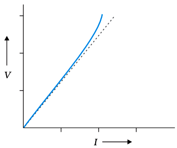
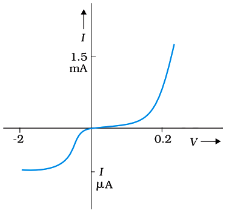
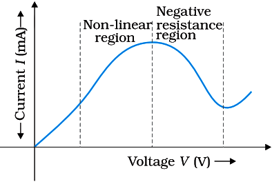
Field pushes electrons opposite to E; mobility links drift to relaxation
time; non-ohmic means the V–I plot is not a straight line through
the origin.



Field pushes electrons opposite to E; mobility links drift to relaxation
time; non-ohmic means the V–I plot is not a straight line through
the origin.
🎯Key Concepts
- 🧲Unit of mobility: m² V−1 s−1; always positive (defined using magnitudes).
- ⏱️In metals, higher temperature usually reduces τ (more collisions) ⇒ mobility decreases.
- 📈Ohmic conductor: straight-line V–I through origin; slope = R.
- 🧪Non-ohmic: slope changes with V (effective resistance not constant).
- 🔁Asymmetric element: current depends on sign of applied V (e.g., diode).
- 🧩Non-unique V–I: multiple V values for the same I in some devices showing negative differential resistance.
🔎RELAXATION TIME → MOBILITY (CORE LINK)
- Between collisions, electron acceleration: a = −(e/m)E.
- Average time between collisions = τ; collisions randomise velocity direction.
- Steady drift: vd = −(eτ/m)E (constant average).
- Mobility uses magnitudes: μ = |vd|/|E| = eτ/m.
⚙️LIMITATIONS OF OHM’S LAW: COMMON NON-OHMIC PATTERNS
- Nonlinear: V not proportional to I; slope dV/dI changes with bias.
- Depends on sign of V: reversing V does not just reverse I (diode).
- Not single-valued: same I may correspond to multiple V (in devices with negative differential resistance).
- Microscopic reason: τ and/or carrier density n become functions of field, temperature, injection, etc.
⚖️Ohmic vs Non-ohmic (V–I behaviour)
| Basis | Ohmic conductor | Non-ohmic device/material |
|---|---|---|
| V–I graph | Straight line through origin | Curved and/or asymmetric and/or multivalued |
| Resistance | R constant (for fixed temperature) | R depends on V, I, temperature, etc. |
| Reversing V | I reverses with same magnitude (ideal symmetry) | I may change magnitude strongly (diode-like) |
| Microscopic condition | n, τ effectively constant with field | n and/or τ vary with field; extra mechanisms appear |
| Examples | Metals at low fields | Diode; negative differential resistance devices (e.g., GaAs-based Gunn diode) |
🧮Formulas
Electron acceleration in uniform field:
a = −emE
Velocity of i-th electron after time ti since last collision
(vector form implied):
Vi = vi − emEti
Averaging: ⟨vi⟩ = 0 (random), ⟨ti⟩ = τ:
vd = ⟨Vi⟩ = −eτmE
Mobility definition (magnitudes):
μ = |vd||E| = eτm
| μ = | mobility (m² V−1 s−1) |
| vd = | drift velocity of carriers (m s−1) |
| E = | electric field magnitude (V m−1) |
| τ = | relaxation time / mean time between collisions (s) |
| e = | magnitude of electronic charge (1.6 × 10−19 C) |
| m = | electron mass (9.11 × 10−31 kg) |
Mobility–relaxation time relation
μ = eτm
⭐Important Points
- μ is defined using magnitudes, so it is positive even for electrons.
- Vector direction: electron vd is opposite to E; conventional current is along E.
- Ohmic behaviour requires approximately constant τ (and n) with applied field.
- Nonlinearity commonly arises when heating changes τ or carrier density changes with bias.
- Sign-dependent V–I is a key signature of rectifying devices (diodes).
💡Memory Technique
“MOBILITY = “M for Mean-free-time””
🧮Formula Sheet
μ = |vd|/|E|vd = −(eτ/m)E (electron)μ =
eτ/mOhmic: V = RI (linear, symmetric,
single-valued)Non-ohmic deviations: (1) nonlinear V–I, (2)
depends on sign of V (diode), (3) non-unique V–I (negative differential
resistance devices)
Classify materials by resistivity and predict how ρ changes with temperature in metals vs
semiconductors
RESISTIVITY AND TEMPERATURE
📖Definition & Introduction
- Resistivity ρ is a material property defined by R = ρlA; unit Ω·m.
- ρ depends on temperature T and on the type of material (metal/alloy/semiconductor/insulator).
- Metals: ρ typically increases with T (positive temperature coefficient α).
- Semiconductors/insulators: ρ typically decreases with T because the number of charge carriers increases strongly.
- Over a limited range, many metals follow an approximate linear law: ρT = ρ0[1 + α(T − T0)].
- Alloys like nichrome/manganin/constantan show very small change of ρ with T → stable resistors.
2 Diagram
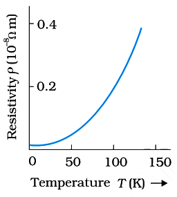
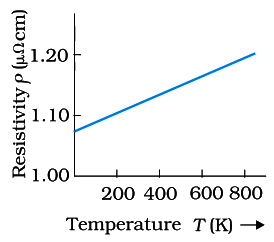
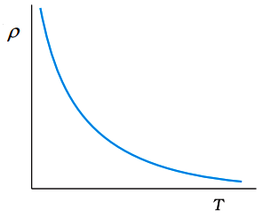
Typical temperature dependence: metals show increasing ρ; semiconductors/insulators
show decreasing ρ.
🎯Key Concepts
- 📏Classification by ρ: conductors (low) → semiconductors (mid) → insulators (very high).
- 📈Metals: n ≈ constant; scattering increases with T ⇒ τ decreases ⇒ ρ increases.
- 📉Semiconductors: n rises steeply with T ⇒ ρ decreases overall (often despite reduced τ).
- 🧪Drude (metals): ρ = mne2τ; in metals, n ≈ constant so τ(T) controls ρ(T).
- 🔥Nichrome heater: small α keeps resistance fairly stable with temperature.
- 🌡️Platinum resistance thermometer: temperature inferred from nearly linear R–T relation (over a calibrated range).
🔎RESISTIVITY RANGES & MATERIAL CLASSIFICATION
- Metals: ρ ≈ 10−8 to 10−6 Ω·m (good conductors).
- Semiconductors: intermediate ρ; strongly affected by temperature and doping.
- Insulators: ρ is extremely high (many orders above metals).
- Conductivity σ = 1/ρ. For a given current density j, heat generated per unit volume is j2ρ.
⚙️WHY TEMPERATURE CHANGES ρ (DRUDE VIEW FOR METALS)
- For metals (Drude): ρ = mne2τ, controlled by carrier density n and relaxation time τ.
- With rising T, lattice vibrations increase → more scattering → τ decreases.
- Metals: n nearly constant ⇒ decrease in τ dominates ⇒ ρ increases.
- Semiconductors: n increases rapidly with T ⇒ ρ decreases overall.
⚖️Metals vs Semiconductors vs Insulators (Resistivity & Temperature Trend)
| Basis | Metals | Semiconductors | Insulators |
|---|---|---|---|
| Typical ρ (Ω·m) | 10−8 to 10−6 | Intermediate (material-dependent) | Very high (often many orders above metals) |
| Main carriers | Electrons | Electrons + holes | Almost no free carriers |
| n vs T | ≈ constant | Increases strongly | Increases slightly (still tiny) |
| ρ vs T | Increases | Decreases (typically) | Decreases (generally) |
| Temperature coefficient α | Positive | Negative (effective, over a range) | Negative (effective, over a range) |
| Use | Wiring, contacts | Electronics, sensors | Dielectrics, insulation |
🧮Formulas
Microscopic conductivity from Drude model (metals):
σ = ne2τm
Resistivity as inverse of conductivity:
ρ = 1σ = mne2τ
Empirical linear law for metals near a reference temperature:
ρT = ρ0[1 +
α(T − T0)]
Same law for resistance of a given wire (since R ∝ ρ if geometry is
unchanged):
RT = R0[1 +
α(T − T0)]
| ρ = | resistivity (Ω·m) |
| R = | resistance (Ω) |
| l, A = | conductor length (m), cross-sectional area (m²) |
| α = | temperature coefficient of resistivity/resistance (K−1 or °C−1) |
| n = | carrier number density (m−3) |
| τ = | relaxation time (s) |
| e, m = | electron charge magnitude (C), electron mass (kg) |
Most important result (metals, limited range)
ρT = ρ0[1 +
α(T − T0)]
⭐Important Points
- Linear law for metals is approximate; valid only over a limited temperature range near T0.
- Unit of α is K−1 (same numerical value as °C−1 for temperature differences).
- Use RT relation only if geometry changes with heating are negligible.
- Metals: n ≈ constant; temperature effect mainly through decreasing τ (more scattering).
- Semiconductors: temperature creates carriers; increase of n dominates → ρ decreases (typically).
💡Memory Technique
“M-S rule: Metals ↑, Semi ↓”
🧮Formula Sheet
R = ρlA, σ = 1ρDrude (metals):
σ = ne2τm and
ρ = mne2τMetals (approx, limited range): ρT = ρ0[1 +
α(T − T0)]Same for a wire (geometry
unchanged): RT = R0[1 + α(T −
T0)]Platinum thermometer (0–100°C, linear interpolation):
Rt −
R0R100 − R0 =
t100Trend: metals
α > 0; semiconductors/insulators effective α < 0 (over a range).
From electrical work to P = IV and Joule heating; why power is sent at high
voltage
ELECTRICAL POWER AND HEATING
📖Definition & Introduction
- Electrical power in a circuit element is the rate at which electrical energy is transferred/converted: P = IV (instantaneous for that element).
- If V denotes the potential drop (higher potential to lower potential) across an element, then for charge ΔQ moving through it: potential energy change ΔU = −ΔQV.
- In real conductors, collisions transfer this energy to the lattice → heating (Joule heating).
- For an ohmic resistor: P = I2R = V2R (using V=IR for that resistor).
- In transmission cables (resistance Rc), power loss (waste) is Pc = I2Rc; hence high V is used to reduce I for a given delivered power.
2 Diagram
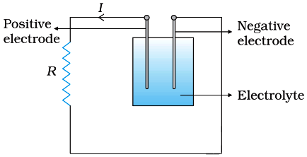
Same delivered power P (approx.): raising transmission voltage lowers current
and reduces cable heating loss.
🎯Key Concepts
- 🔋Electrical energy converted in time Δt: ΔW = IVΔt = VΔQ (magnitude).
- 🔥Joule heating: collisions prevent continuous KE buildup; field work becomes lattice vibrations (heat).
- 📈For approximately fixed delivered power P, cable loss Pc = P2RcV2 ∝ 1/V2 (using I≈P/V).
- 🧠Exam chain: want low loss ⇒ reduce I (since loss ∝ I2) ⇒ increase V (since P=VI).
🔎DERIVATION: ENERGY DISSIPATION AND POWER
- Charge moved in time Δt: ΔQ = IΔt.
- If V is the potential drop, potential energy change: ΔU = −ΔQV = −IVΔt.
- Magnitude of electrical work done by the field (and converted to heat in a resistor): ΔW = IVΔt.
- Power: P = ΔWΔt = IV; with V=IR get I2R and V2/R.
⚙️POWER TRANSMISSION: WHY HIGH VOLTAGE?
- Cable resistance Rc causes waste: Pc = I2Rc (ohmic loss).
- If delivered power is approximately P ≈ VI at transmission voltage V, then I ≈ PV ⇒ Pc = P2RcV2.
- Doubling V reduces loss by factor 4; increasing V by 10 reduces loss by 100 (for same P and Rc).
- High V is dangerous for users, so voltage is stepped down near consumers (transformers).
⚖️CHOOSING THE BEST POWER FORM
| Given / fixed | Use power form | Typical use |
|---|---|---|
| I and V | P = IV | Any circuit element; power input/output |
| I and R | P = I2R | Heating loss in wires/cables; fuse rating logic |
| V and R | P = V2R | Appliance at fixed supply voltage; resistor across source |
🧮Formulas
Charge transported in time
ΔQ = IΔt
Potential energy change for a potential drop V
ΔU = −ΔQV = −IVΔt
Electrical work converted to heat (magnitude)
ΔW = IVΔt
Power and ohmic forms using V=IR
P = ΔWΔt = IV =
I2R = V2R
Cable loss for approximately fixed delivered power P at voltage V
Pc = I2Rc
with I≈PV ⇒
Pc≈P2RcV2
| I = | Current (A) |
| V = | Potential difference across element / transmission voltage (V) |
| R = | Resistance of the device/resistor (Ω) |
| Rc = | Total resistance of transmission cables (Ω) |
| P = | Power delivered/used (W) |
| Pc = | Power lost as heat in cables (W) |
| ΔW = | Electrical energy converted to heat (J) |
| Δt = | Time interval (s) |
Transmission loss key result (fixed delivered P, approx.)
Pc≈P2RcV2
⇒ increase V to reduce losses
⭐Important Points
- ΔW = IVΔt is the magnitude of electrical energy converted to heat in time Δt.
- P = IV is general; P = I2R and V2/R require V=IR for that element.
- Ohmic (Joule) loss in any resistance (including wires) is proportional to I2.
- For approximately fixed delivered P, raising transmission V reduces current and hence cable heating approximately as 1/V2.
- Power rating is energy per second; energy used in time t is Pt.
💡Memory Technique
“Mnemonic: VIP + I²R heat”
🧮Formula Sheet
ΔQ = IΔt(Potential drop) ΔU
= −ΔQV(Heat/energy converted, magnitude) ΔW = IVΔt
= VΔQP = IV(Ohmic resistor)
P = I2R = V2R(Cable loss) Pc = I2Rc(Fixed delivered P, approx.) Pc≈P2RcV2
Open circuit: V = e; with load (discharging): V = e −
Ir
CELLS, EMF AND INTERNAL RESISTANCE
📖Definition & Introduction
- Emf (e) of a cell is the open-circuit potential difference between its terminals (potential of + terminal relative to − terminal).
- In an electrochemical cell, electrode–electrolyte interfaces create contact potential differences that make the + terminal at higher potential than the − terminal; the net open-circuit terminal potential difference is the emf: e = V+ − V− (potentials measured relative to the same reference in the electrolyte).
- Internal resistance (r) is the effective resistance inside the cell (mainly due to the electrolyte and electrodes).
- With current I delivered to an external resistor R (cell discharging), terminal voltage is V = e − Ir.
- External circuit obeys V = IR, giving I = eR + r.
- Maximum current (short circuit) occurs when R = 0: Imax = er.
2 Diagram
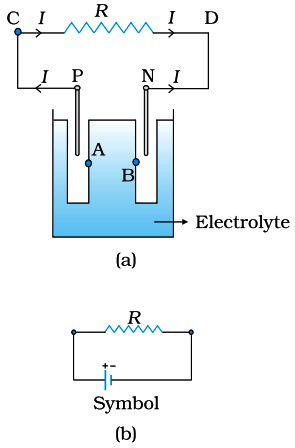
Equivalent circuit of a real cell: ideal emf e in series with internal
resistance r, supplying external R.
🎯Key Concepts
- 🔌Open circuit: I = 0 ⇒ no internal drop ⇒ terminal p.d. V = e
- 🧪In a discharging cell, chemical forces drive charge separation so that conventional current is delivered from + to − in the external circuit.
- 🧱Internal drop Ir reduces terminal voltage under load: V < e.
- ➗Equivalent circuit: ideal source e in series with internal resistance r.
- 📉V vs I is a straight line: intercept e, slope = −r (units Ω).
🔎EMF FROM ELECTRODE POTENTIALS (OPEN CIRCUIT)
- Each electrode–electrolyte interface develops a contact potential difference.
- Let V+ and V− be the potentials of + and − terminals relative to the same reference in the electrolyte.
- With no current, electrolyte is (approximately) equipotential ⇒ open-circuit terminal p.d. V = V+ − V− = e.
- Emf is a potential difference (historical name), not a force.
⚙️LOADED CELL: TERMINAL VOLTAGE, CURRENT, POWER INSIDE
- When supplying current I, a drop Ir occurs inside the cell due to internal resistance.
- Terminal p.d. across external circuit: V = e − Ir (discharging).
- External resistor: V = IR ⇒ I = eR + r.
- Internal power loss (heating inside cell): Pint = I2r.
⚖️EMF vs TERMINAL POTENTIAL DIFFERENCE
| Basis | Emf (e) | Terminal p.d. (V) |
|---|---|---|
| Meaning | Energy supplied per unit charge by chemical action (open-circuit value of potential difference) | Potential difference across cell terminals when current flows in the external circuit |
| Condition | Measured when I = 0 (open circuit) | Measured when current flows (load connected) |
| Relation (discharging) | e = V when I = 0 | V = e − Ir |
| Typical comparison | For a given state of the cell, independent of external R | Depends on I and hence on R |
🧮Formulas
Model a real cell as ideal source e in series with internal resistance
r.
Loop: e = IR + Ir
Rearrange to get current.
I = eR +
r
Terminal voltage across external resistor.
V = IR = e −
Ir
Short-circuit current (maximum current from the cell).
If R = 0: Imax = er
| e = | emf of cell (V) |
| V = | terminal potential difference across cell terminals (V) |
| r = | internal resistance of cell (Ω) |
| R = | external resistance connected across the cell (Ω) |
| I = | current in the circuit (A) |
| V+, V− = | potentials of + and − terminals relative to the same reference (V) |
Most important result (loaded cell, discharging)
V = e − Ir, and I = eR + r
⭐Important Points
- Emf is defined for open circuit: no current ⇒ no internal drop.
- Under load (discharging), terminal p.d. is less than emf: V = e − Ir.
- Internal resistance is in series with the external resistor in the equivalent circuit.
- V–I graph is linear; intercept gives e and magnitude of slope gives r.
- Short circuit is dangerous: very large current limited only by r (and wiring).
💡Memory Technique
“E-V-IR: "EMF minus INTERNAL drop"”
🧮Formula Sheet
Emf is the open-circuit terminal potential difference: I = 0 ⇒
V = eLoaded cell (discharging): V = e −
IrExternal resistor: V = IRCircuit current: I = eR +
rShort-circuit current: Imax =
erInternal
power loss (heating): Pint = I2rOpen-circuit emf sign convention (same reference): e = V+ −
V−
Find equivalent emf and internal resistance; decide aiding/opposing and load current fast
COMBINING CELLS (SERIES & PARALLEL)
📖Definition & Introduction
- A real cell is modeled as an ideal source of emf ε in series with internal resistance r.
- A combination of cells can be replaced by one equivalent cell (εeq, req) giving same terminal V–I behavior.
- In series, internal resistances always add; emfs add algebraically (sign depends on orientation).
- In parallel, the terminal p.d. is common; equivalent emf becomes a weighted average using εi/ri weights.
- For any equivalent cell connected to external resistor R: I = εeq/(R + req).
2 Diagram
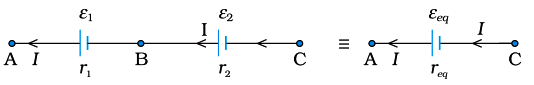
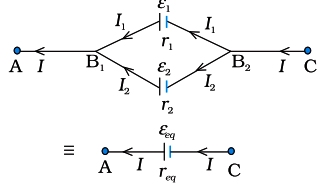
Top: series cells (emfs add algebraically). Bottom: parallel cells (common terminal
p.d.).
🎯Key Concepts
- ➕Series aiding: same polarity direction along the path ⇒ εeq = Σεi, req = Σri
- ➖Series opposition: one (or more) reversed ⇒ εeq = algebraic sum; use sign rule while traversing
- 🔀Parallel: same terminal p.d.; junction rule I = I1 + I2 + …
- ⚖️Parallel weighted emf: εeq/req = Σ(εi/ri) and 1/req = Σ(1/ri)
- 🎯Best use: series for larger ε; parallel for smaller internal resistance (higher current capability)
🔎SIGN RULE FOR EMF (SERIES PATH TRICK)
- Choose a loop direction; add +ε when moving from − to + terminal inside a cell.
- Add −ε when moving from + to − terminal (cell then opposes chosen direction).
- Then use I = εeq/(R + req); negative I means opposite actual direction.
⚙️PARALLEL GROUPS: CURRENT SHARING (WHY WEIGHTED EMF?)
- For two cells in parallel, terminal p.d. is same: V = ε1 − I1r1 = ε2 − I2r2.
- At the junction: I = I1 + I2 (KCL).
- Equivalent form: εeq/req = Σ(εi/ri) and 1/req = Σ(1/ri).
⚖️SERIES vs PARALLEL (REAL CELLS)
| Basis | Series combination | Parallel combination |
|---|---|---|
| Terminal connection | End-to-end | All + together, all − together |
| Equivalent emf | εeq = algebraic Σεi | εeq = Σ(εi/ri)Σ(1/ri) |
| Equivalent internal resistance | req = Σri | 1/req = Σ(1/ri) |
| Best for | Higher voltage (bigger ε) | Higher current (smaller r) |
| Risk / caution | Reversing one cell reduces εeq | Unequal ε causes internal circulating current |
🧮Formulas
Series combination (n cells):
εeq = Σ(±εi),
req = Σri
Two cells in parallel: use common terminal p.d. and KCL.
V = ε1 −
I1r1 = ε2 −
I2r2, I = I1 +
I2
Eliminate I1, I2 to write Thevenin form V
= εeq − Ireq:
εeq = r2ε1 +
r1ε2r1 +
r2, req = r1r2r1 +
r2
General parallel (n cells):
1/req = Σ(1/ri),
εeq/req = Σ(εi/ri)
| ε = | emf of a cell (V) |
| r = | internal resistance of a cell (Ω) |
| εeq = | equivalent emf of the combination (V) |
| req = | equivalent internal resistance (Ω) |
| R = | external load resistance connected to the combination (Ω) |
| I, I1, I2 = | load current and branch currents (A) |
| V = | terminal potential difference of the combination (V) |
Weighted-emf rule for parallel cells (most tested)
εeq = Σ(εi/ri)Σ(1/ri)
and 1/req = Σ(1/ri)
⭐Important Points
- Series: emfs add algebraically; internal resistances always add.
- In series opposition, equivalent emf can become zero → only internal resistances remain.
- Parallel: do not add emfs directly; use weighted average based on internal resistances.
- General parallel rule: εeq/req = Σ(εi/ri) is faster than pairwise reduction.
- Identical cells: series gives εeq=nε, req=nr; parallel gives εeq=ε, req=r/n.
💡Memory Technique
“SAPA: Series Add, Parallel Average”
🧮Formula Sheet
Series: εeq = Σ(±εi),
req = ΣriSeries aiding (2 cells):
εeq = ε1 + ε2Series
opposition (2 cells): εeq = ε1 − ε2 (take signs
by traversal)Two cells parallel: εeq = (
r2ε1 + r1ε2 )/(
r1 + r2 ), req =
(r1r2)/( r1 + r2 )n cells parallel: 1/req = Σ(1/ri),
εeq/req = Σ(εi/ri)Load current for equivalent cell: I = εeq/(R +
req)
Junction rule + loop rule with sign conventions → solve networks & balance bridges
KIRCHHOFF RULES & WHEATSTONE BRIDGE
📖Definition & Introduction
- Kirchhoff’s rules are conservation laws for steady currents in lumped circuits: charge and energy conservation.
- Junction rule (KCL): at any node, algebraic sum of currents is zero (no charge accumulation).
- Loop rule (KVL): in any closed loop, algebraic sum of potential changes is zero.
- Choose current directions arbitrarily; a negative solution means actual direction is opposite.
- Apply KCL + KVL to write simultaneous linear equations for unknown currents/voltages.
- Wheatstone bridge balance: galvanometer current Ig=0, so the two junctions connected to the galvanometer are at equal potential.
2 Diagram
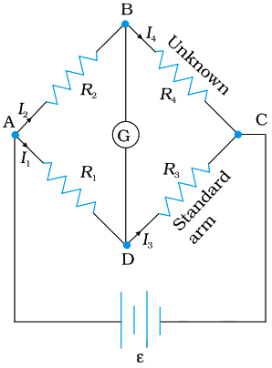
Balanced bridge: nodes B and C at equal potential ⇒ galvanometer current
Ig=0.
🎯Key Concepts
- KCLKCL: ΣI at a node = 0 (use one consistent sign convention for all branches).
- KVLKVL: Traverse a loop; resistor drop is −IR along current, +IR opposite.
- SourAcross an ideal cell: from − to + terminal gives +ε; from + to − gives −ε.
- InteCell with internal resistance r: delivering current V=ε−Ir; charging V=ε+Ir.
- BridWheatstone balance: R1R2 = R3R4 ⇒ Ig=0.
🔎SIGN CONVENTIONS YOU MUST FIX BEFORE WRITING EQUATIONS
- Pick a current direction in every branch; keep it fixed while writing KCL/KVL.
- Resistor: moving along assumed current gives ΔV=−IR; opposite gives +IR.
- Ideal cell (emf ε): traverse from − to + terminal gives +ε; from + to − gives −ε.
- Cell with internal r: include ±Ir using the same sign rule as a resistor.
- Terminal p.d. of cell: delivering current (current leaves + terminal) V=ε−Ir; charging V=ε+Ir.
⚙️WHEATSTONE BRIDGE: BALANCE CONDITION + USES
- Balance means no current through galvanometer: Ig=0 ⇒ the two galvanometer terminals are equipotential.
- Condition: R1R2=R3R4 (ratio arms).
- At balance, galvanometer branch can be removed; remaining network reduces to two series branches in parallel between the supply nodes.
- Used to find an unknown resistance by adjusting a known resistor until null deflection (high accuracy).
- Unbalanced bridge: direction of galvanometer current indicates which midpoint is at higher potential.
⚖️Kirchhoff Junction Rule vs Loop Rule
| Basis | Junction rule (KCL) | Loop rule (KVL) |
|---|---|---|
| Conservation law | Charge conservation | Energy conservation |
| Statement | Algebraic sum of currents at a node: ΣI = 0 | Algebraic sum of potential changes in a loop: ΣΔV = 0 |
| Applies to | Any junction (node) | Any closed loop |
| Physical meaning | No net charge accumulation at a node (steady state) | Net work done per unit charge in a closed loop is zero |
| Common use | Relate branch currents | Relate currents to sources and resistive drops |
🧮Formulas
Junction rule (steady state: no charge accumulation at a node)
At a junction: ΣI = 0
Loop rule (energy conservation; include source rises and resistive drops)
In a loop: ΣΔV = 0 (include ±ε and
±IR)
Wheatstone balance (equipotential galvanometer terminals)
Ig=0 ⇒
VB=VC ⇒ R1R2 = R3R4
| I = | Current in a branch (A) |
| ΔV = | Potential change across an element while traversing a loop (V) |
| V = | Potential (or terminal potential difference, as stated) (V) |
| ε = | Emf of cell/source (V) |
| r = | Internal resistance of cell (Ω) |
| R1, R2, R3, R4 = | Four arms of Wheatstone bridge (Ω) |
| Ig = | Galvanometer current (A) |
Bridge balance (null deflection) condition
R1R2 = R3R4 ⇔
Ig=0
⭐Important Points
- Kirchhoff rules assume steady state: no net charge piling up at nodes.
- Choose a loop direction; keep the same sign convention for every element in that loop.
- Negative current from equations means the real current is opposite to the assumed direction.
- With internal resistance: in delivering mode, terminal p.d. is less than ε by Ir.
- Wheatstone balance is a null method: at balance, result is independent of galvanometer resistance.
💡Memory Technique
“Loop mantra: "Rise in source, drop in resistor"”
🧮Formula Sheet
KCL (junction rule): algebraic sum of currents at a node is zero,
ΣI=0KVL (loop rule): algebraic sum of potential changes in a closed
loop is zero, ΣΔV=0Resistor while traversing: along current
ΔV=−IR; against current ΔV=+IRIdeal
cell while traversing: −→+ gives +ε; +→− gives −εCell terminal voltage with
internal resistance r: delivering V=ε−Ir; charging
V=ε+IrWheatstone bridge balance (null deflection): R1R2=R3R4 ⇔
Ig=0